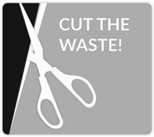

Trade Mark Journal No.2025/042 17 October 2025
WO0000001879020 (16,17,42)
Office of origin: Switzerland
Date of International Registration:17 July 2025
Date of designation in the UK:
17 July 2025

International priority date claimed: 30 January 2025
(Switzerland)
(827713)
- Class 16
- Sheets, films and bags of plastic materials for wrapping and packaging; packaging materials of paper or cardboard for the pharmaceutical industry; packaging material of plastic materials; sheets for use in food packaging; laminated plastic film packaging materials; laminated and film blister packaging; packaging materials in the nature of layers of paper in a multi-layered mat being components of sealing films; plastic sheets for packaging used as a barrier against moisture and gases; polypropylene foil for packaging; packaging foils of plastic for pharmaceuticals and bulbs.
- Class 17
- Packing, stopping and insulating materials; plastic film other than for wrapping; plastic blister packs for pharmaceutical and medical products; plastic sheets for use as laminated plastic sheets; plastic diapers for use as laminated plastic layers; plastic materials in extruded form for industrial use; plastic sheets, other than for wrapping, for use as a moisture and gas barrier; polypropylene films, other than for packaging; shrink film for labels and soft capsules; foils of metal for insulating; multi-layer composite films and panels consisting of layers of polymers, film and paper, coated or uncoated, used in the manufacturing industry; biodegradable polymer films used in the manufacturing industry; rigid polymer films used in the manufacture of credit cards, debit cards, customer cards and other similar cards; coated and uncoated polymer coating films used in the manufacturing industry; rolls and sheets of polymer films used in the manufacturing industry; transparent, translucent, opaque and colored polymer films used in the manufacturing industry; printed films used in the manufacturing industry; single layer or multilayer polymer films used in the manufacture of packaging for consumer goods; single-layer or multilayer polymer films, films made from paper or blister films.
- Class 42
- Scientific and technological services as well as research and design services relating thereto; industrial analysis, industrial research and industrial design services; quality control and authentication services; research and development services in the field of packaging for medicines; packaging designer services; design and development of computer hardware and software; scientific laboratory services; consultancy concerning the design and development of pharmaceutical packaging; testing, scientific research and development in the field of pharmaceutical packaging; packaging design and selection services for third parties; research and testing in the field of pharmaceuticals for determining the appropriate packaging; technical consultancy in the field of product packaging design; consulting services in the field of development of sustainability goals aiming to reduce the use of materials and energy consumption during the design, development and manufacture of packaging for pharmaceutical products; research and development in the field of environmentally friendly pharmaceutical packaging; scientific research in the field of environmental protection, in particular in the field of the production of sustainable pharmaceutical packaging; technical and scientific consultancy in the field of energy-saving; technical and scientific consultancy in the field of the reduction of materials used in product packaging; engineering consultancy concerning the environmental impact of product packaging.
Liveo Research AG
Representative: Walder Wyss AG, Seefeldstrasse 123,, Postfach, CH-8034 Zürich, SWITZERLAND